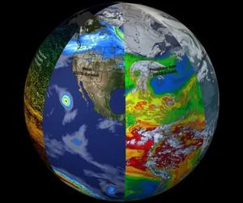
Earth System Trend DetectiveAdvanced
Pick variables from Earth science missions, watch how they change over time, and detect what changes, where, and whether the change is significant.
Earth science · Software
We're elay puej, a team from Santa Cruz competing in the NASA Space Apps Challenge 2026.
Our challenge GrazePoint · live betaWe're building software!
The NASA Space Apps Challenge is the world's biggest hackathon. Thousands of teams in nearly every country spend a weekend solving real problems with open NASA data.
This year it runs on Saturday the 14th and Sunday the 15th of November. The submission window opens at 9:00 on Saturday and closes at noon on Sunday; teams defend their projects from 2 PM and everything wraps up at 8 PM, always local time.
Teams can have up to six people. Mine is «elay puej», from Santa Cruz, and the challenge is «GrazePoint»: NASA data crossed with each farm's soil to test crop rotations. There are two of us now — Leo is an agronomist who knows the field for real — and there's room for four more: artists and designers are welcome.
While the day arrives, this page does the counting. The process is told in the journal.
Best told in a podcast episode (in Spanish):
Despacio que tengo prisa · full episode
Earth System Trend DetectiveAdvanced
Pick variables from Earth science missions, watch how they change over time, and detect what changes, where, and whether the change is significant.
Earth science · Software
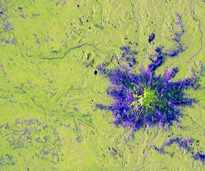
Dancing with the SARsAdvanced · Intermediate
An interactive app that uses the NISAR radar to track and visualize surface changes: wetlands, wildfires, glaciers.
Earth science
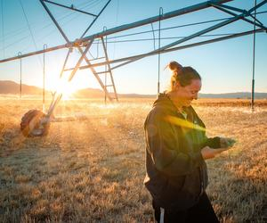
Our challenge
GrazePointAdvanced · Intermediate
A decision-support tool that crosses NASA observations with each farm's soil and the farmer's priorities to explore rotations. Our build already runs in production beta at asosab.github.io/GrazePoint.
Art & multimedia · Earth science · Software
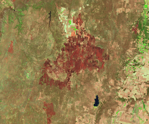
MODIS + VIIRS Hot SpotsAdvanced · Intermediate
Harmonize more than twenty years of heat spots recorded by two satellites into a single burning calendar for early warning.
Earth science · Software
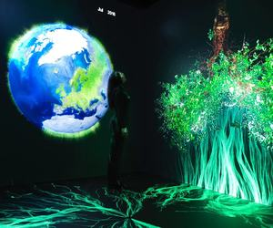
The Earth Information JukeboxIntermediate · Beginner
Translate the Earth Information Center visualizations into sound generated in real time: sonify the planet.
Art & multimedia · Earth science · Software
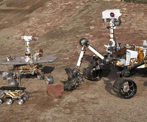
Abandoned but not ForgottenIntermediate · Beginner
Tell the story of the hardware NASA left on the Moon, on Mars and in deep space, for school-age readers.
Astrophysics · Planets & moons · Exploration
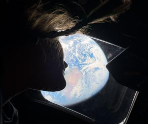
Junior Astronaut Mission TrainerIntermediate · Beginner
A game where students run a lunar or Martian base balancing life support, shielding, energy and food.
Games · Planets & moons · Software
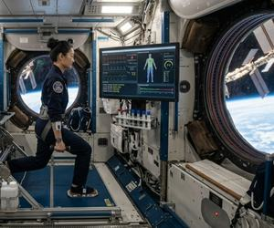
Health Monitoring for AstronautsIntermediate
Software that gathers health indicators so an astronaut on a long mission can self-assess and act in time.
Human exploration · Software
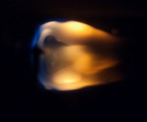
Flame in FreefallAdvanced · Intermediate
An AI-powered dashboard that summarizes and interprets decades of microgravity combustion data for fire safety.
Space exploration
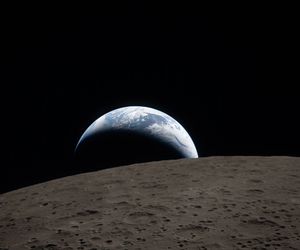
Moon Base AnalogsAdvanced · Intermediate · Beginner
Find places on Earth analogous to future lunar or Martian base sites, using open data from several agencies.
Earth science · Planets & moons · Software
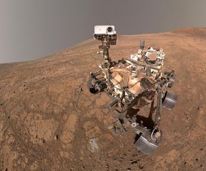
Martian MapIntermediate
A layered map of a Martian route that integrates data from several missions to plan a safe hike.
Human exploration · Mars · Software
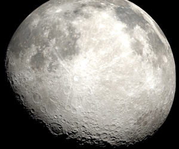
Lunar Landing Site NavigatorAdvanced · Intermediate
Compare south-pole landing sites by visualizing the positions of the Sun and Earth: energy and communication windows.
Human exploration · Moon · Software
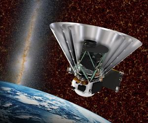
Planet X and SPHERExAdvanced
A public web tool to browse SPHEREx sky images and see how they change between scans.
Astrophysics · Planets & moons · Software
Space Mission Design GameIntermediate · Beginner
A game to design, manage and simulate a complete mission: engineering decisions with limited resources.
Games
Earth seen from the International Space Station, filmed by the Expedition 29 crew.
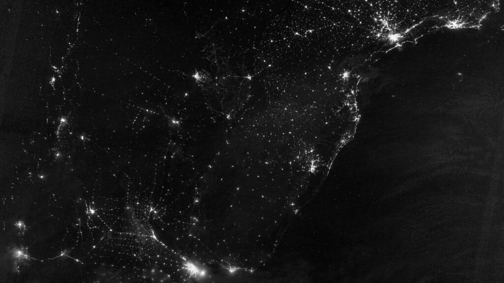
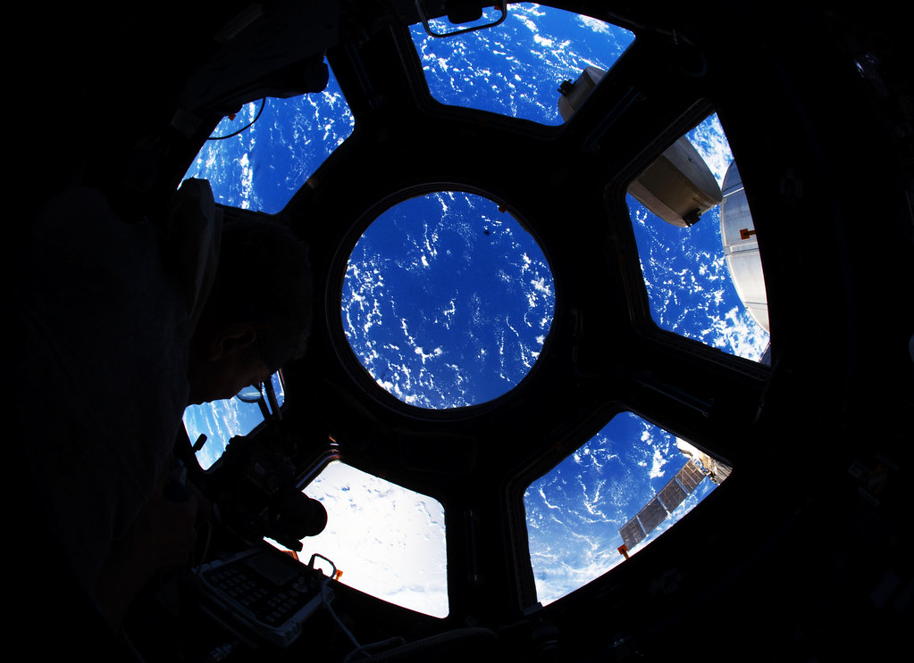
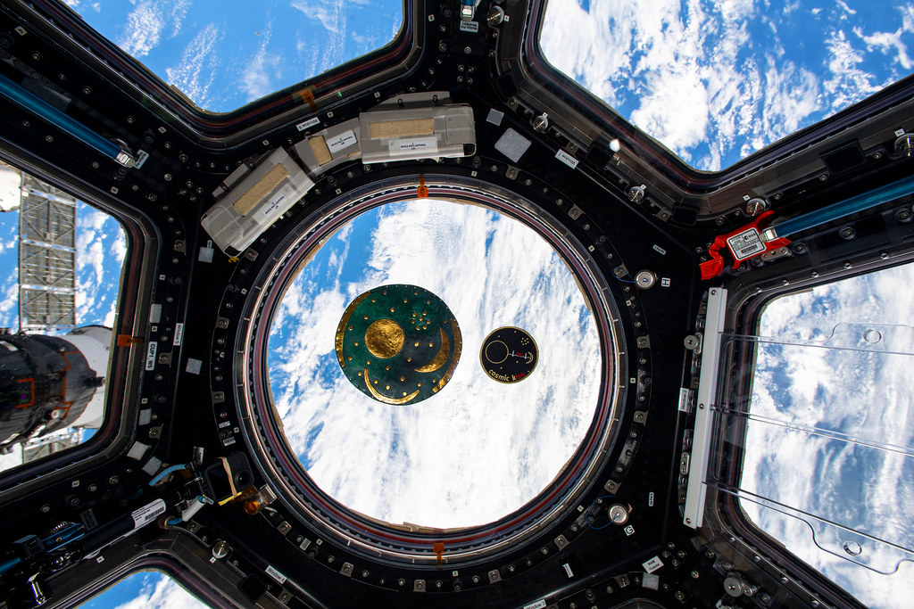
Teamelay puej
ChallengeGrazePoint
AppGrazePoint · production beta
BaseSanta Cruz de la Sierra, Bolivia
There are two of us: Leo brings the agronomy and the field, I bring the code. That's exactly what the challenge asks for, crossing NASA data with each farm's soil.
Code and product
I've spent years building things with code: a bot that watches real-estate listings, landings for podcasts, a citizen call center that handled over 50,000 cases in two years.
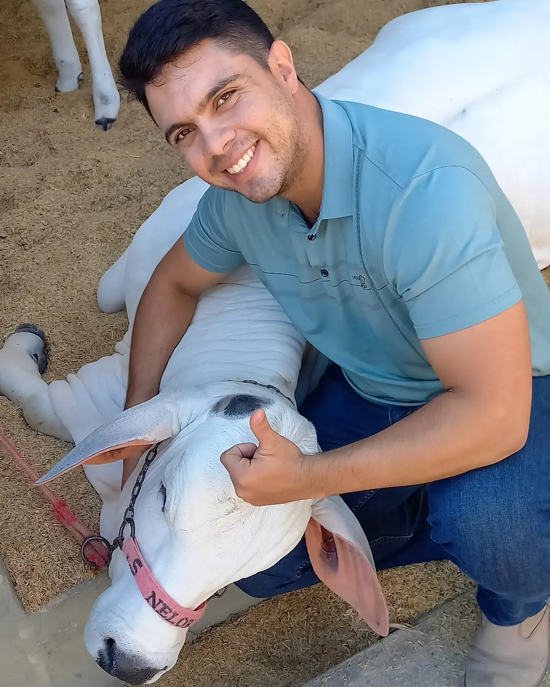
Agronomy and field
Leo is an agronomist, a UAGRM graduate. He comes from the field: crop monitoring, pastures and cattle production, and precision agriculture with drones and satellite imagery.
GrazePoint runs in production beta; progress lands in the journal, videos on my channel.
Open GrazePoint Read the journal